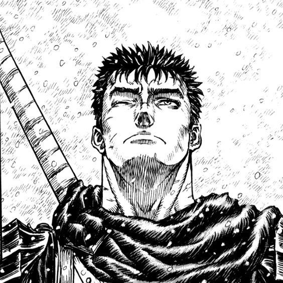
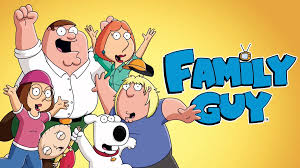

Meus projetos

meu manga favorito
"Berserk" é um mangá sombrio sobre Guts, um guerreiro em busca de vingança contra demônios e seu antigo amigo Griffith...

meu jogo favorito
Jogo de RPG onde Ash captura Pokémon, desafia ginásios e derrota a Equipe Rocket para se tornar um mestre...

desenho favorito
Comédia animada sobre a disfuncional família Griffin, com humor ácido, referências pop e situações absurdas em Quahog...